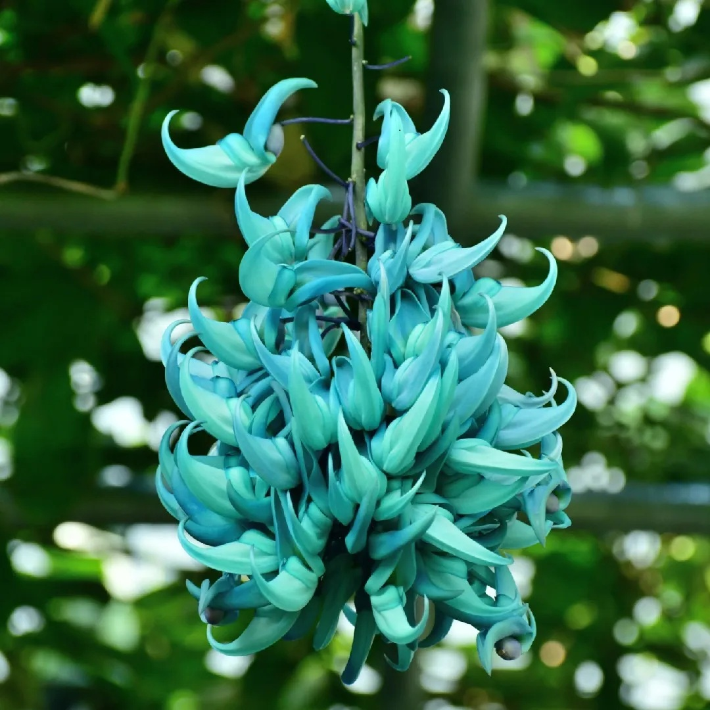

| Sus flores son el rasgo más distintivo, con pétalos de un color azul verdoso intenso, que crecen en forma de doble gancho. Los racimos florales pueden alcanzar varios metros de longitud, con decenas de flores cada uno, creando un espectáculo visual impresionante. La planta puede crecer hasta 18 metros de largo, formando un denso follaje verde claro. Se utiliza como planta ornamental en jardines y como elemento decorativo en interiores, especialmente en regiones con climas favorables. |
 |
| Es originaria de las selvas húmedas de Filipinas, específicamente a lo largo de arroyos y barrancos. Se encuentra en peligro de extinción debido a la destrucción de su hábitat, la deforestación. |
- Germinación: Las semillas de la flor de jade, que se encuentran en las vainas, germinan en un sustrato húmedo y cálido, idealmente a temperaturas constantes de 25°C.
- Crecimiento: La plántula se desarrolla como una enredadera leñosa, extendiéndose a través de tallos que pueden alcanzar hasta 20 metros de longitud.
- Floración: La floración ocurre típicamente en primavera y verano, produciendo racimos colgantes de flores verde jade que pueden medir varios metros de largo.
- Polinización: La polinización puede ser realizada por murciélagos o, en su defecto, mediante polinización manual si se cultivan en zonas sin murciélagos.
- Formación de vainas: Después de la polinización, se desarrollan vainas de semillas oblongas, que pueden contener hasta 15 cm de largo y 1-3 semillas.
- Maduración y propagación: Las semillas maduran en las vainas y pueden ser recolectadas para la propagación, idealmente sembrándolas poco después de la cosecha.
- Longevidad: La planta puede vivir entre 10 y 20 años o incluso más con los cuidados adecuados, convirtiéndose en una compañera a largo plazo.
|